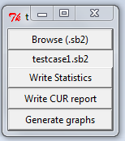

Ghoul has now an online version on Heroku
Ghoul is a Scratch 2.0 project analyzer. It produces statistics about commands, messages, variables, lists and scene commands. It also generates graphs that illustrate communications between Scratch sprites..csv report : Commands Statistics
.cur report : Report about messages / variables / lists / scenes
_m_.png image : Graph representing communication via messages
_v_.png image : Graph representing communication via variables
_l_.png image : Graph representing communication via lists
_s_.png image : Graph representing communication via scenes
_a_.png image : Graph representing all communication via messages / variables / lists
How to use
If you have Python 2.7 download source and
python Ghoul.py
If you have Windows try the pre-release
Reports and graphs are stored in Reports folder.